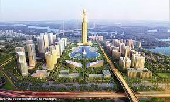

Introduction
Emerging technologies are revolutionizing public transit, promising to reshape urban mobility while mitigating environmental impact. Innovations like autonomous vehicles, electric buses, and smart infrastructure enable more efficient, sustainable, and accessible transportation networks. By optimizing routes, reducing emissions, and enhancing connectivity, these systems promise to alleviate traffic congestion, improve air quality, and create greener, more livable cities for the future.

Innovative Technologies
- Autonomous buses represent a transformative shift in urban transit, offering efficient and sustainable mobility solutions. Their deployment reduces reliance on traditional fossil fuel vehicles, minimizing emissions and traffic congestion. By leveraging advanced technologies, these buses enhance safety, accessibility, and overall efficiency, revolutionizing public transportation in urban centers.
- Maglev trains utilize magnetic levitation technology to propel trains along dedicated tracks at ultra-fast speeds. By eliminating physical contact between the train and the track, maglev trains minimize friction, resulting in smoother rides and significantly reduced travel times. This innovative technology offers a sustainable and efficient transit solution for high-speed intercity and urban transportation networks.

Environmental and Social Impacts
Next-generation public transit systems, leveraging technologies like autonomous buses and maglev trains, significantly reduce carbon emissions and traffic congestion. Through electric or alternative energy sources and advanced traffic management, these systems minimize environmental impact while optimizing urban mobility. Improved air quality and enhanced accessibility foster healthier, more sustainable urban environments, underscoring their vital role in shaping modern cities for a better quality of life.

Challenges and Opportunities
Implementing advanced transit systems faces technological, financial, and regulatory hurdles, including integration complexities and funding limitations. However, they offer unprecedented opportunities for sustainable urban development by fostering compact, economically vibrant communities and reducing environmental impact. Overcoming challenges requires innovative approaches to financing, robust regulatory frameworks, and public engagement. Ultimately, embracing advanced transit systems is vital for building resilient, equitable cities that thrive in the face of urbanization and climate change.
Inspirational Quote
"The future of transportation in cities is as much about technology as it is about the planning of physical space." - Jane Jacobs
Conclusion
The next generation of public transport systems will revolutionize urban landscapes by reducing congestion, improving air quality, and enhancing connectivity. These systems will stimulate economic development, promote sustainable urban growth, and foster vibrant communities. By encouraging the use of clean energy and efficient transportation options, they will mitigate environmental impact and enhance the quality of life for urban residents. However, their success hinges on strategic planning, investment, and collaboration among stakeholders. Ultimately, these innovations will play a pivotal role in shaping sustainable, efficient cities of the future.
